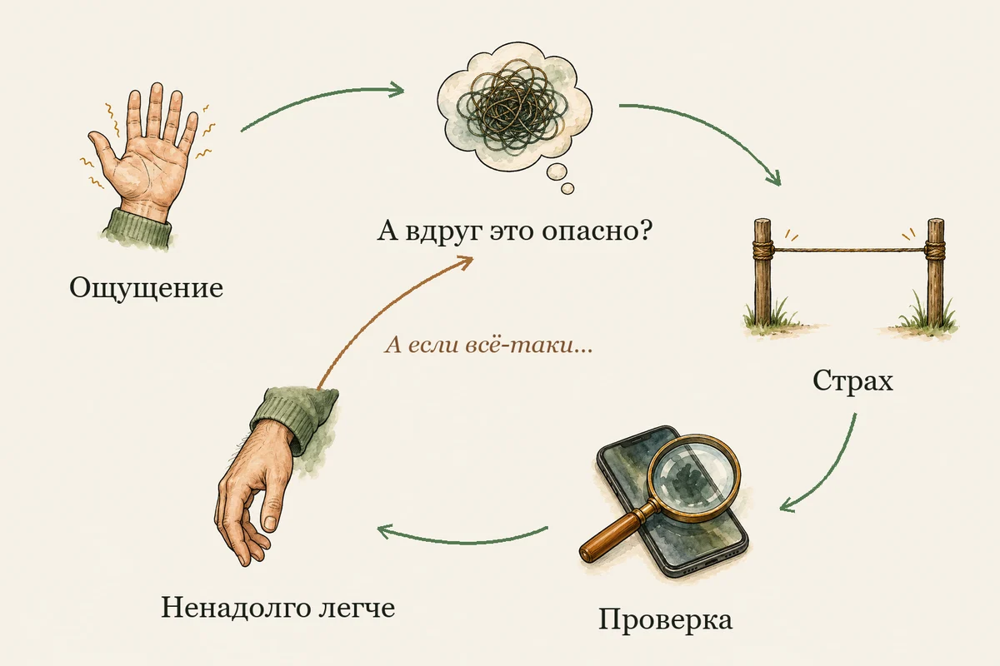
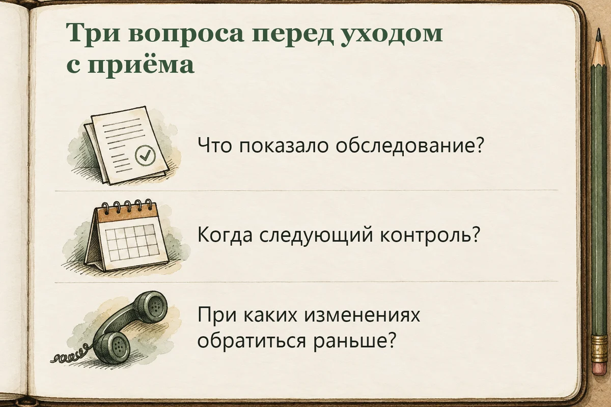

Главная → Блог → Тревога за здоровье
Ипохондрия и тревога за здоровье: как перестать бояться болезней
02.11.2026 · 13 минут чтения
Ночью вы открыли телефон, чтобы узнать, почему дёргается веко. Через полчаса у вас семь вкладок, завтра рано вставать, а закрыть последнюю трудно: вдруг именно там ответ? Так может выглядеть тревога за здоровье. Страх заболеть занимает всё больше времени, а найденное объяснение успокаивает лишь ненадолго.
Если вы узнали себя, это не значит, что вы «придумываете» симптомы. Тревога может усиливать внимание к телу, но сама по себе не объясняет причину конкретного симптома. Новые или ухудшающиеся изменения здоровья обсуждают с врачом; тревожный цикл можно разбирать параллельно.
- Что такое тревога за здоровье и ипохондрия
- Как тревога превращается в цикл проверок
- Как перестать искать у себя болезни
- Боюсь, что врач что-то пропустил
- Если у меня уже есть заболевание
- Как близкие могут поддержать
- Как лечат тревогу за здоровье
- Когда нужна срочная помощь
- Частые вопросы
- Вместо вывода: заботиться о здоровье без бесконечных проверок
Что такое тревога за здоровье и ипохондрия
О беспокойстве стоит задуматься, когда мысли о болезни возвращаются снова и снова, их трудно отложить, а проверки или избегание начинают отнимать время и ограничивать обычную жизнь. Само по себе внимание к здоровью нормально: после нового симптома записаться к врачу или следовать плану наблюдения — это забота о себе.
Слово «ипохондрия» до сих пор встречается в речи и медицинских классификациях. В быту им иногда обзывают человека, будто тот «всё выдумал», хотя телесные ощущения могут быть реальными, а страх — мучительным. В российской практике врач может использовать термин из МКБ-10 «ипохондрическое расстройство» (F45.2). План внедрения МКБ-11 в России приостановлен в 2024 году; в классификации ВОЗ гипохондрия обозначена кодом 6B23 и отнесена к обсессивно-компульсивным и родственным расстройствам. МКБ-10 ВОЗ, МКБ-11 ВОЗ, распоряжение Правительства РФ о приостановке плана перехода.
Ипохондрия, нозофобия и киберхондрия — в чём разница?
Нозофобией обычно называют сильный страх конкретной болезни, например рака или ВИЧ. Киберхондрия — разговорное название повторного поиска болезней и симптомов в интернете, после которого тревога усиливается. Врач оценивает не только название страха, но и его контекст, влияние на жизнь и медицинскую историю человека.
Если человек боится именно рака, в быту это иногда называют канцерофобией. Само слово описывает содержание страха, но не говорит, есть ли заболевание и нужна ли диагностика: медицинское решение зависит от симптомов и рекомендаций врача.
В русскоязычной психологической литературе используют и выражение «тревога о здоровье». Т. Д. Шевеленкова, например, изучала её в пилотной выборке из 40 молодых людей. Статья в «Вестнике РУДН».
Как тревога превращается в цикл проверок
Представьте: вы почувствовали покалывание в руке. Появилась мысль: «А вдруг это опасный симптом?» Тревога усилилась, и вы стали чаще прислушиваться к телу. Затем проверили руку, нашли несколько диагнозов в поиске и попросили близкого сказать, что всё в порядке. На короткое время стало легче. Позже сомнение вернулось: «А если я описал врачу не всё?»
Обычно цикл выглядит так:
Ощущение или новость о болезни → пугающее объяснение → тревога → проверка, поиск или заверение → краткое облегчение → новое сомнение.

Пугающее объяснение — например, «головная боль означает опухоль» — называют катастрофизацией. Повторные измерения, ощупывание тела, поиск симптомов и просьбы снова подтвердить безопасность могут стать «поведением безопасности»: они помогают пережить страх здесь и сейчас, но закрепляют мысль, что без очередной проверки справиться нельзя. Облегчение подкрепляет проверку, поэтому в следующий раз так и тянет повторить её.
Ещё один фактор — внимание. Когда вы постоянно прислушиваетесь к телу, замечаете больше обычных ощущений и чаще возвращаетесь к ним мыслями. Это не означает, что вы придумали их или вызвали болезнь: внимание может менять то, насколько заметным кажется сигнал. Если удаётся отложить привычную проверку, тревога поначалу может усилиться, а затем ослабнуть и без нового заверения. Это не происходит по расписанию; цель — понемногу научиться выдерживать волну страха, а не добиться мгновенного спокойствия.
У одной и той же проверки бывает разная цель. Допустим, врач попросил измерять давление утром и вечером. Утреннее измерение даёт цифру для дневника. А когда через минуту хочется измерить ещё раз, хотя результат привычный и самочувствие прежнее, стоит спросить себя: «Что я сделаю с этой цифрой? Что изменится, если я её узнаю?»
| Ситуация | Действие по медицинскому плану | Возможный тревожный цикл |
|---|---|---|
| Появился новый симптом | Записать, когда он начался, и обратиться за медицинским советом в подходящий срок | Снова и снова проверять то же место и искать в сети всё новые диагнозы |
| Получен результат обследования | Уточнить у врача, что он означает и нужен ли контроль | Успокоиться ненадолго, затем без новых данных искать ещё одно подтверждение |
| Возникла тревожная мысль | Записать вопрос для врача, если он остался после объяснения | Перечитывать симптомы и искать новые версии диагноза до временного облегчения |
Если беспокойство касается не только здоровья и охватывает работу, отношения или будущее, может быть полезен гид о тревожном расстройстве. Если страх появляется резко вместе с сильными телесными ощущениями, прочитайте о панической атаке.
Как перестать искать у себя болезни
Полезная цель — не убедить себя, что «точно ничего нет», а вернуть себе возможность выбирать следующий шаг. Начните с простого плана.
Что делать прямо сейчас, когда страшно
Если симптом новый или резко изменился, используйте план врача или обратитесь за медицинским советом. Если ощущение знакомое и вы уже знаете от врача, как действовать, попробуйте закрыть вкладку на десять минут. Скажите себе: «Мне страшно. Я знаю, при каких изменениях нужно позвонить врачу». Вернитесь к тому, что собирались делать до поиска. Можно допить остывший чай, даже пока тревожно.
1. Разделите симптом и желание проверить
Спросите себя: «Появилось ли что-то новое, что нужно обсудить с врачом? Или я снова проверяю то же самое, чтобы снова почувствовать облегчение?» Если вы не уверены, запишите вопрос и задайте его медицинскому специалисту. Не нужно решать диагноз по поисковой выдаче.
2. Заметьте, что происходит перед проверкой
В течение нескольких дней кратко отмечайте: что запустило тревогу, что вы сделали для проверки и как надолго хватило облегчения. NHS предлагает отслеживать частоту проверок тела, поиска медицинской информации и просьб о заверениях, а затем постепенно сокращать эти действия. Если записи усиливают наблюдение за каждым ощущением, пропустите этот шаг. Рекомендации NHS по тревоге за здоровье.
3. Сокращайте проверки постепенно
Не отменяйте назначенные обследования и не отказывайтесь от медицинской помощи. Выберите одно действие, которого нет в плане врача: например, отложить повторное измерение на десять минут или не открывать ещё одну страницу с описанием симптома. В это время продолжите обычное занятие. Если состояние изменилось или не соответствует плану, обратитесь за медицинским советом.
Начните с небольшой паузы, которую реально выдержать. Когда желание проверить вернулось, отметьте его и решите, подождать ли ещё немного или перейти к делу, которое планировали. Не оценивайте упражнение по тому, исчез ли страх: успех здесь — сделать выбор, а не автоматически повторить проверку.
4. Возвращайтесь к тому, чего тревога заставила избегать
Может быть, вы перестали гулять, заниматься спортом, ездить далеко от дома или встречаться с друзьями. Выберите небольшой безопасный шаг и сверяйтесь с медицинскими ограничениями, если они есть. Возвращение к обычной активности не является тестом на здоровье; это способ постепенно вернуть в день то, что было вытеснено страхом.
5. Ответьте на мысль реалистично, а не заверением
Вместо «со мной точно всё в порядке» можно сказать: «Я заметил(а) симптом и могу действовать по плану. Сейчас я не обязан(а) ставить себе диагноз. Если появится оговорённое изменение, я свяжусь с врачом». Такая фраза не отменяет неопределённость, но помогает не превращать её в бесконечный поиск.
Когда снова тянет искать диагнозы, попробуйте записать в AI Therapist не симптомы для оценки, а сам тревожный эпизод: что вас напугало, что вы проверили и насколько хватило облегчения. Такой разбор помогает заметить привычку проверять и вернуться к согласованному с врачом плану. Приложение не оценивает симптомы и не заменяет медицинскую помощь.
Скачать AI Therapist в RuStoreБоюсь, что врач что-то пропустил
После обследования может остаться сомнение: «А вдруг проверили не то?» или «А если болезнь пока не видно?». Если симптом сохраняется, меняется или вы не поняли рекомендации, уточнить решение врача или получить второе мнение допустимо. Трудность начинается, когда повторные консультации и тесты нужны только для краткого успокоения, а после них возникает новый вопрос и всё начинается заново.
На приёме можно сказать: «У меня есть такое-то ощущение, оно началось тогда-то. Я боюсь, что это может быть серьёзно. Помогите понять, какой план действий нужен и при каких изменениях обратиться повторно».
Нормальный результат отвечает на вопрос, который проверял конкретный анализ или обследование. Врач может объяснить, что результат показывает, чего он не проверял и при каких изменениях нужна новая оценка. Если таких изменений нет, но страх требует повторить тест только ради облегчения, скажите об этом врачу: это поможет обсудить и симптом, и цикл проверок.
Подготовьте короткие заметки:
- что изменилось и когда;
- как часто появляется ощущение и что на него влияет;
- какие обследования уже проходили и что рекомендовал врач;
- какие лекарства принимаете;
- какие действия или планы вы отменили из-за страха.
В конце спросите: «Что делать, если ощущение повторится? При каких изменениях связаться с вами раньше? Когда нужна плановая повторная оценка?» Если у вас есть несколько специалистов, попросите помочь собрать рекомендации в один понятный план. Это полезнее, чем самостоятельно расширять количество измерений и обследований.

Если вы боитесь, что врач отмахнётся, назовите и физическую жалобу, и тревогу: «Я хочу оценить симптом и замечаю, что из-за страха много раз его проверяю». Так врачу легче обсудить обе стороны ситуации, не сводя одну к другой.
Если у меня уже есть заболевание
Тревога за здоровье может соседствовать с реальной болезнью. Тогда задача не в том, чтобы перестать следить за состоянием, а в том, чтобы отличить согласованное наблюдение от проверок, которые тревога добавляет сама.
Попросите лечащего врача чётко определить, какие показатели отслеживать, как часто это делать и при каких изменениях обращаться повторно. Если из-за страха вы избегаете назначенного контроля или, напротив, проверяете показатели гораздо чаще, расскажите об этом. Психологическая помощь и медицинское наблюдение могут идти параллельно.
Как близкие могут поддержать
Фраза «да у тебя ничего нет» может звучать как обесценивание. Но и бесконечно заверять, что опасности точно нет, обычно помогает лишь ненадолго. Близкий может признать страх и поддержать разумный следующий шаг:
- «Вижу, что тебе тревожно. Давай посмотрим, что врач советовал делать дальше».
- «Я побуду рядом, пока ты запишешь вопрос для врача».
- «Тебе сейчас нужна помощь с симптомом, с тревогой или с обоими?»
Не высмеивайте человека, не проверяйте его тайком и не отговаривайте обращаться за медицинской помощью. Лучше спросить, какая поддержка нужна, и помочь найти специалиста, если тревога мешает жить.
Как лечат тревогу за здоровье
Один из изученных подходов — когнитивно-поведенческая терапия (КПТ). На встречах человек учится замечать, как пугающее толкование усиливает тревогу и запускает проверки; вместе со специалистом он постепенно меняет поведение, учится переносить неопределённость и возвращается к избегаемым занятиям. Экспозиция с предотвращением привычной реакции может входить в такой план: человек встречается с безопасной ситуацией, которой избегал, и постепенно учится не выполнять автоматическую проверку. Это не означает игнорировать новый симптом или медицинские рекомендации.
Систематический обзор и сетевой метаанализ 2026 года сравнивал психологические методы у взрослых с выраженной тревогой за здоровье. В него вошли 35 исследований и 3263 участника. Авторы обнаружили пользу нескольких подходов, включая КПТ и некоторые варианты терапии «третьей волны», по сравнению с листом ожидания; это данные групповых исследований, а не обещание результата каждому человеку. Подход и план помощи подбирают вместе со специалистом. Lai et al., British Journal of Psychiatry, 2026.
Если вместе с тревогой есть депрессия, панические атаки или другие трудности, специалист учитывает их тоже. Врач может обсудить разные варианты помощи, в том числе медикаментозные; самостоятельно начинать, отменять или менять лекарства не следует.
Можно ли описывать симптомы чат-боту?
Чат-боту можно поручить конкретную задачу: «Помоги мне из этих заметок составить три вопроса для приёма». Если же вы в пятый раз меняете формулировку, чтобы услышать «точно ничего страшного», разговор сам становится ещё одной проверкой. Оценить симптом по переписке с ИИ нельзя.
Когда нужна срочная помощь
Не используйте этот список для постоянной самопроверки; он нужен как короткий ориентир. Срочно обращайтесь за медицинской помощью при внезапной сильной или сдавливающей боли в груди, особенно вместе с одышкой; выраженном затруднении дыхания; внезапной слабости или онемении лица, руки или ноги с одной стороны, нарушении речи или внезапной спутанности сознания; потере сознания. Это не полный перечень: при резком тяжёлом ухудшении или сомнении обращайтесь в местную экстренную службу. В России единый номер — 112; в других странах используйте местный экстренный номер. МЧС России о вызове скорой, NHS о боли в груди, Американская ассоциация инсульта о симптомах инсульта.
Если у вас появились мысли о самоубийстве и есть риск, что вы можете причинить себе вред, не оставайтесь в одиночестве: сообщите близкому человеку и обратитесь за срочной помощью; при непосредственной опасности звоните в местную экстренную службу.
Частые вопросы
Тревога может вызывать физические симптомы?
Тревога может сопровождаться телесными реакциями и усиливать внимание к ощущениям. Если симптом новый или ухудшается, обсудите его с врачом.
К кому обратиться?
С физическим симптомом — к врачу, который оценит медицинскую сторону. Если страх трудно контролировать, он занимает много времени или мешает повседневной жизни, можно обратиться к психологу, психотерапевту или психиатру. Если непонятно, с чего начать, поднимите оба вопроса на приёме у врача общей практики или терапевта.
Если проверки и попытки нейтрализовать тревожную мысль повторяются не только вокруг здоровья, обсудите это со специалистом; подробнее об обсессиях и ритуалах — в статье об ОКР.
Вместо вывода: заботиться о здоровье без бесконечных проверок
Тревога о здоровье может заставить снова и снова искать гарантию, которой невозможно добиться одним тестом или заверением. Более устойчивый путь — обсудить симптомы с врачом, договориться о понятном плане и постепенно возвращать себе занятия, от которых пришлось отказаться из-за страха. Начать можно не с большого решения, а с одного вопроса врачу или одной проверки, которую вы попробуете отложить.
Примечание. Статья носит информационный характер, не ставит диагноз и не заменяет медицинскую консультацию.
Источники
- NHS: Health anxiety — проверки, поиск заверений, постепенное сокращение повторяющихся действий и обращение за помощью.
- Lai L. et al. The comparative effectiveness of psychological interventions for health anxiety: systematic review and a network meta-analysis of randomised controlled trials. British Journal of Psychiatry, 2026. Анализ 35 РКИ с 3263 взрослыми участниками с выраженной тревогой за здоровье.
- МКБ-10 ВОЗ: F45.2 Hypochondriacal disorder и МКБ-11 ВОЗ: Clinical Descriptions and Diagnostic Requirements.
- Шевеленкова Т. Д. «Субъективный компонент психического здоровья молодых людей с ипохондрической симптоматикой (повышенной тревогой о здоровье)», «Вестник РУДН», 2023. Пилотное исследование 40 человек; источник терминологии и российского контекста, не эффективности лечения.
- Распоряжение Правительства РФ от 31.01.2024 № 200-р — о приостановке плана внедрения МКБ-11 в России.
- МЧС России: как вызвать скорую помощь; NHS: Chest pain; American Stroke Association: Stroke symptoms.
Читать также
- Как проявляется тревожное расстройство
- Тест PHQ-15 на телесные симптомы — оценка того, насколько симптомы беспокоили; не определяет их причину и не заменяет врача.